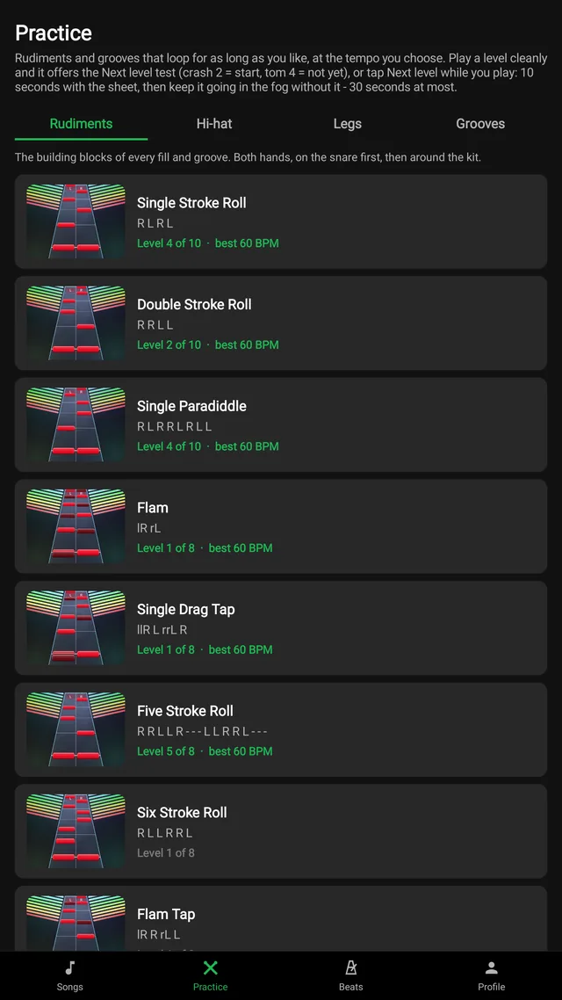

How to learn drums at home on an electronic drum kit
An electronic kit is one of the best ways to learn drums: you can practise quietly with headphones at any hour, and it can tell a computer exactly when you hit each pad. Here is a plan that takes you from "I just unboxed it" to playing real grooves, one small step at a time.
1. Set up the kit so it fits you
A badly set-up kit makes everything harder and can hurt your wrists and back. Take ten minutes for this first.
- Throne height: sit so your thighs slope very slightly down towards your knees. Too low and the kick pedal feels heavy; too high and you lose balance.
- Snare: between your knees, a little above them, flat or tilted slightly towards you. Your sticks should hit the middle without your arms reaching.
- Hi-hat: on your left (if you are right-handed), a bit higher than the snare so your sticks don't clash. Your left foot rests on the hi-hat pedal.
- Kick pedal: straight in front of your right leg, so your knee bends at roughly a right angle.
- Toms and cymbals: close enough to reach without stretching. If you have to lean, move them in.
Playing left-handed? Mirror everything. Most electronic kits can be set up either way.
2. Hold the sticks
Use matched grip: both hands hold the sticks the same way. Pinch each stick between your thumb and the first joint of your index finger, about a third of the way up from the end. Wrap the other fingers loosely around it. The stick should be able to bounce. If you squeeze, you tire quickly and the stick can't rebound off the pad.
Let the stick do the work: throw it down and let it come back up. Rubber pads and mesh heads bounce a lot, which makes this easy to learn on an e-kit.
3. Learn to count
Almost all pop and rock music is in 4/4 time: four beats in a bar, counted 1 2 3 4. Halfway between the beats are the "and"s, so eighth notes are counted 1 & 2 & 3 & 4 &. Count out loud while you play. It feels silly, and it is the single habit that makes beginners improve fastest.
4. Your first beat
The basic rock beat is behind thousands of songs. Hi-hat on every eighth note, kick on 1 and 3, snare on 2 and 4:
Learn it in layers:
- Play only the hi-hat eighth notes with your right hand, counting out loud, until it is steady.
- Add the snare on 2 and 4 with your left hand.
- Add the kick on 1 and 3. Notice that the kick and the hi-hat land at exactly the same time.
- Loop it for a whole minute without stopping. Then speed up a little.
Once it feels easy, try kick on 1, the "&" of 2, and 3. Small changes like that give you many new grooves.
On HiHatGo! the Practice page has this kind of groove (and many more by genre) as a looping exercise. Pick a slow tempo, and the app shows every hit as perfect, early or late, so you know exactly what to fix.

5. A 15-minute daily practice plan
Fifteen focused minutes every day beat two hours once a week. Your hands and feet learn by repetition and sleep.
| Minutes | What | Why |
|---|---|---|
| 0 – 3 | Warm-up: single strokes (R L R L) on the snare, slow then a bit faster | Loose wrists, even hands |
| 3 – 7 | One rudiment, e.g. double strokes or the paradiddle | Technique and control |
| 7 – 12 | One groove, looped, with a click | Timing and coordination |
| 12 – 15 | Play along to a song you like | Fun, and using it for real |
Write down the tempo you reached each day, or let an app track it. Seeing the number creep up week by week keeps you motivated.
6. Practise slow, with a click
Drummers keep the time for the whole band, so timing matters more than speed. Practise every new pattern slower than you can play it, with a metronome (a click). Only speed up once you can play it cleanly several times in a row, and only by a few BPM.
A useful trick: once a groove feels solid, try playing it without looking at anything, just by feel. If it falls apart, you were still reading, not playing.
Tip: HiHatGo!'s Next level test does exactly this. After 10 seconds with the notes, fog covers them and you keep the pattern going by feel for a few clean rounds.
7. Beginner mistakes to avoid
- Going too fast too soon. Speed comes from clean, relaxed repetition at slow tempos.
- Squeezing the sticks. Tension makes you slower and can lead to sore wrists.
- Ignoring your feet. Practise kick and hi-hat foot patterns on their own too.
- Only playing what you already know. Fun, but you won't improve. Spend part of every session on something slightly too hard.
- Never playing along to music. Exercises build skill, songs teach you to use it. Do both.
- Bad latency. If your hits sound late, the problem may be your setup, not you. Use wired headphones and calibrate any app you play with. See Connect your kit.
8. What to learn next
- Drum rudiments: the building blocks of fills and stick control.
- Reading drum sheet music: lets you learn any beat from a page.
- Fills: start with four sixteenth notes on the snare at the end of every fourth bar, then move them around the toms.
- Different styles: funk, disco, half-time and shuffle grooves each teach your hands and feet something new.
Quick answers
Can you learn drums on an electronic drum kit?
Yes. An electronic kit is one of the best ways to learn: you can practise quietly with headphones at any hour, and a computer or app can tell you exactly how early or late each hit was. Everything you learn transfers to an acoustic kit.
How long should a beginner practise drums each day?
About 15 focused minutes every day is enough to start: a 3-minute warm-up, one rudiment, one groove with a click, then a song you like. Daily short practice beats one long session a week.
What is the first beat to learn on drums?
The basic rock beat: eighth notes on the hi-hat, the kick on beats 1 and 3, and the snare on beats 2 and 4. Learn it slowly with a click, then speed it up.
Should I practise drums with a metronome?
Yes. Play slowly with a click until every hit lands on it, then raise the tempo in small steps. Playing slow and clean builds speed faster than playing fast and sloppy.